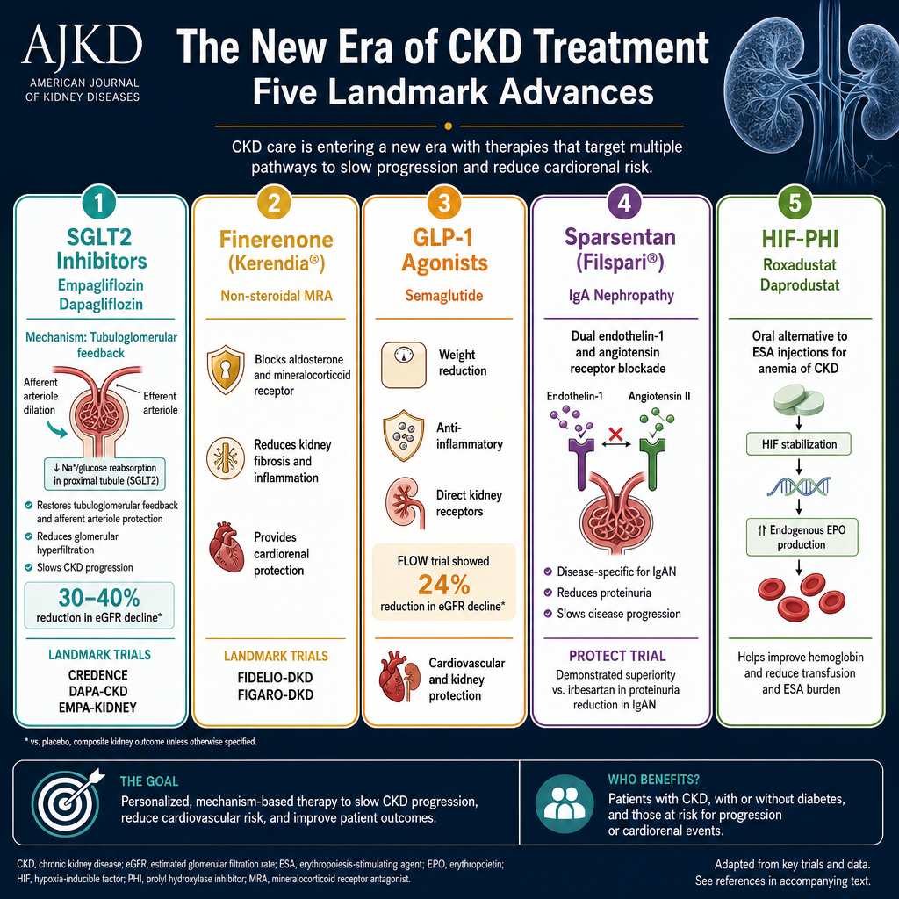
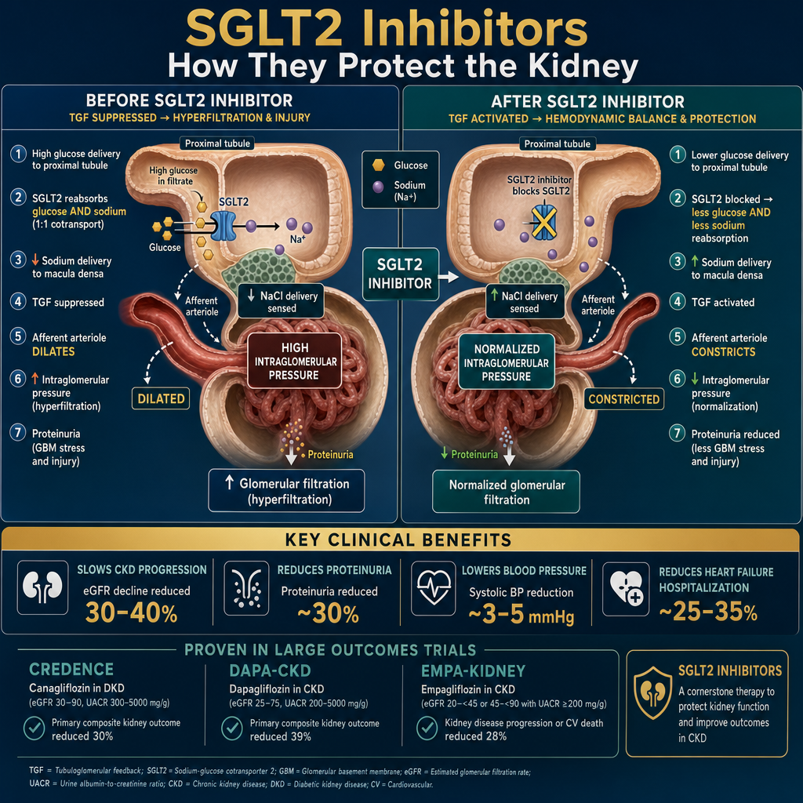
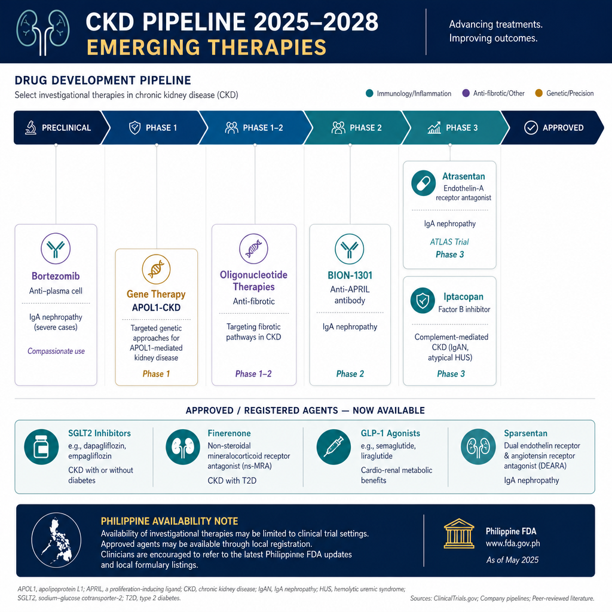

Why the Last Five Years Changed EverythingBakit Nagbago ang Lahat sa Nakaraang Limang TaonNgano nga Nagbag-o ang Tanan sa Nakalabay nga Lima ka Tuig Bakit Nagbago ing Amin king Nakaraang Limang Banua
For decades, CKD management relied almost entirely on ACE inhibitors, ARBs, and blood pressure control. Between 2019 and 2025, a series of landmark trials produced a second wave of kidney-protective drugs — each targeting a different mechanism of progression. For the first time, we can offer patients multiple overlapping layers of protection beyond RAAS blockade.Sa loob ng maraming dekada, ang pamamahala ng CKD ay umaasa halos ganap sa mga ACE inhibitor, ARB, at kontrol ng blood pressure. Sa pagitan ng 2019 at 2025, isang serye ng mga landmark na pagsubok ay nagbigay ng isang pangalawang alon ng mga gamot na nagpoprotekta sa bato — bawat isa ay nagta-target ng ibang mekanismo ng progresyon. Sa unang pagkakataon, maaari na tayong mag-alok sa mga pasyente ng maraming magkakapatong na antas ng proteksyon lampas sa RAAS blockade.Sa daghang dekada, ang pagdumala sa CKD nagsalig halos sa bug-os sa mga ACE inhibitor, ARB, ug kontrol sa blood pressure. Tali sa 2019 ug 2025, usa ka serye sa mga landmark nga pagsulay naghatag ug usa ka ikaduhang alon sa mga tambal nga nagpanalipod sa kidney — ang matag usa nagpunting sa lain nga mekanismo sa pagkusog. Sa unang higayon, makahimo na kita mag-alok sa mga pasyente ug daghang nagkatupung nga mga layer sa proteksyon lapas sa RAAS blockade. King loob ning dacal a dekada, ing pamamahala ning CKD ya umaasa halos ganap king deng ACE inhibitor, ARB, at kontrol ning blood pressure. King pagitan ning 2019 at 2025, metung a serye ning deng landmark a pagsubok ya nagbigay ning metung a pangalawang alon ning deng gamut a nagpoprotekta king batu — bawat metung ya nagta-target ning ibang mekanismo ning progresyon. King unang pagkakabanua, maaari a tayong mag-alok king deng pasyente ning dacal a magkakapatong a antas ning proteksyon lampas king RAAS blockade.

Each new drug class targets a distinct pathway — enabling simultaneous multi-layer kidney protection far beyond what ACE/ARB alone can achieve.Ang bawat bagong klase ng gamot ay nagta-target ng natatanging landas — nagbibigay-daan sa sabay-sabay na multi-layer na proteksyon ng bato na higit pa sa anumang maaabot ng ACE/ARB lamang.Ang matag bag-ong klase sa tambal nagpunting sa lain-laing landas — nagtugot sa dunganon nga multi-layer nga proteksyon sa kidney nga labi ka taas kaysa sa mahimo sa ACE/ARB lamang. Ing bawat bagong klase ning gamut ya nagta-target ning natatanging landas — nagbibigay-daan king sabay-sabay a multi-layer a proteksyon ning batu a higit pa king anumang maaabot ning ACE/ARB lamang.

SGLT2 InhibitorsMga SGLT2 InhibitorMga SGLT2 Inhibitor Deng SGLT2 Inhibitor Established Standard of Care
Originally developed as glucose-lowering drugs for type 2 diabetes, SGLT2 inhibitors were found to have profound kidney and cardiovascular protective effects — operating largely independently of glucose control.Orihinal na binuo bilang mga gamot na nagpapababa ng glucose para sa type 2 diabetes, natuklasan na ang mga SGLT2 inhibitor ay may malalim na epekto sa pagprotekta ng bato at cardiovascular — gumagana nang malaki nang independyente sa kontrol ng glucose.Orihinal nga gipalambo isip mga tambal nga nagpaubos sa glucose alang sa type 2 diabetes, nahibal-an nga ang mga SGLT2 inhibitor adunay lawom nga epekto sa pagpanalipod sa kidney ug cardiovascular — nagbuhat sa daghan nga independyente sa kontrol sa glucose. Orihinal a binuo bilang deng gamut a nagpapababa ning glucose para king type 2 diabetes, natuklasan a ing deng SGLT2 inhibitor ya atin malalim a epekto king pagprotekta ning batu at cardiovascular — gumagana nang malaki nang independyente king kontrol ning glucose.
By blocking sodium-glucose co-transport in the proximal tubule, SGLT2 inhibitors restore normal tubuloglomerular feedback — reducing afferent arteriole dilation and intraglomerular pressure.Sa pamamagitan ng pagharang sa sodium-glucose co-transport sa proximal tubule, nire-restore ng mga SGLT2 inhibitor ang normal na tubuloglomerular feedback — binabawasan ang dilation ng afferent arteriole at intraglomerular pressure.Pinaagi sa pagbabag sa sodium-glucose co-transport sa proximal tubule, ang mga SGLT2 inhibitor nagpanumbalik sa normal nga tubuloglomerular feedback — nagpaubos sa dilation sa afferent arteriole ug intraglomerular pressure. King pamamagitan ning pagharang king sodium-glucose co-transport king proximal tubule, nire-restore ning deng SGLT2 inhibitor ing normal a tubuloglomerular feedback — binabawasan ing dilation ning afferent arteriole at intraglomerular pressure.
Dapagliflozin
The DAPA-CKD trial (2020) — first SGLT2i trial in non-diabetic CKD — showed 44% reduction in composite kidney failure/CV death endpoint. Benefits seen across all CKD etiologies including IgA nephropathy, FSGS, and non-diabetic CKD. Now indicated from eGFR ≥25 mL/min.Ang DAPA-CKD trial (2020) — unang SGLT2i trial sa non-diabetic CKD — nagpakita ng 44% na pagbaba sa composite na endpoint ng kidney failure/CV death. Ang mga benepisyo ay nakita sa lahat ng etikolohiya ng CKD kabilang ang IgA nephropathy, FSGS, at non-diabetic CKD. Ngayon ay ipinahiwatig mula sa eGFR ≥25 mL/min.Ang DAPA-CKD trial (2020) — unang SGLT2i trial sa non-diabetic CKD — nagpakita sa 44% nga pagkunhod sa composite nga endpoint sa kidney failure/CV death. Ang mga benepisyo nakita sa tanan nga etikolohiya sa CKD lakip ang IgA nephropathy, FSGS, ug non-diabetic CKD. Karon giindika gikan sa eGFR ≥25 mL/min. Ing DAPA-CKD trial (2020) — unang SGLT2i trial king non-diabetic CKD — nagpakita ning 44% a pagbaba king composite a endpoint ning kidney failure/CV death. Ing deng benepisyo ya nakita king amin ning etikolohiya ning CKD kabilang ing IgA nephropathy, FSGS, at non-diabetic CKD. Ngayon ya ipinahiwatig mula king eGFR ≥25 mL/min.
DAPA-CKD · DECLAREEmpagliflozin
EMPA-KIDNEY trial (2022) — extended use to eGFR ≥20 mL/min with proteinuria. 28% relative risk reduction in kidney progression. Particularly strong CV mortality benefit in heart failure patients. Approved for HFrEF and HFpEF regardless of diabetes.EMPA-KIDNEY trial (2022) — pinalawig ang paggamit sa eGFR ≥20 mL/min na may proteinuria. 28% na relative risk reduction sa pagsulong ng bato. Lalo na malakas na benepisyo sa CV mortality sa mga pasyenteng may heart failure. Naaprubahan para sa HFrEF at HFpEF anuman ang diabetes.EMPA-KIDNEY trial (2022) — gipalapdan ang paggamit ngadto sa eGFR ≥20 mL/min nga adunay proteinuria. 28% nga relative risk reduction sa pagkusog sa kidney. Labi ka kusog nga benepisyo sa CV mortality sa mga pasyente nga adunay heart failure. Na-approve alang sa HFrEF ug HFpEF bisan unsang diabetes. EMPA-KIDNEY trial (2022) — pinalawig ing paggamit king eGFR ≥20 mL/min a atin proteinuria. 28% a relative risk reduction king pagsulong ning batu. Lalo a malakas a benepisyo king CV mortality king deng pasyenteng atin heart failure. Naaprubahan para king HFrEF at HFpEF anuman ing diabetes.
EMPA-KIDNEY · EMPERORCanagliflozin
CREDENCE trial (2019) — first dedicated CKD outcomes trial for any SGLT2i. 30% relative risk reduction in primary endpoint (kidney failure, CV death). Also reduces hyperkalemia risk — modest kaluretic effect. Primarily used in diabetic CKD.CREDENCE trial (2019) — unang dedicated na CKD outcomes trial para sa anumang SGLT2i. 30% na relative risk reduction sa pangunahing endpoint (kidney failure, CV death). Nagbabawas din ng panganib ng hyperkalemia — katamtamang kaluretic na epekto. Pangunahing ginagamit sa diabetic CKD.CREDENCE trial (2019) — unang dedicated nga CKD outcomes trial alang sa bisan unsang SGLT2i. 30% nga relative risk reduction sa pangunahing endpoint (kidney failure, CV death). Nagpaubos usab sa peligro sa hyperkalemia — katamtamang kaluretic nga epekto. Pangunahing gigamit sa diabetic CKD. CREDENCE trial (2019) — unang dedicated a CKD outcomes trial para king anumang SGLT2i. 30% a relative risk reduction king pangunahing endpoint (kidney failure, CV death). Nagbabawas din ning panganib ning hyperkalemia — katamtamang kaluretic a epekto. Pangunahing ginagamit king diabetic CKD.
CREDENCE · CANVASThe "dip" — why eGFR initially falls on SGLT2iAng "dip" — bakit unang bumababa ang eGFR sa SGLT2iAng "dip" — ngano nga ang eGFR una nga manaog sa SGLT2i Ing "dip" — bakit unang bumababa ing eGFR king SGLT2i
When SGLT2 inhibitors are started, eGFR drops by 3–5 mL/min within the first 2–4 weeks. This is expected and beneficial — it reflects reduced intraglomerular hyperfiltration, not kidney damage. Do not stop the medication because of this dip. Patients who show this initial dip have the greatest long-term kidney protection. The eGFR subsequently stabilizes and declines more slowly than without treatment.Kapag sinimulan ang mga SGLT2 inhibitor, ang eGFR ay bumababa ng 3–5 mL/min sa loob ng unang 2–4 na linggo. Ito ay inaasahan at kapaki-pakinabang — ito ay sumasalamin sa nabawasang intraglomerular hyperfiltration, hindi pinsala ng bato. Huwag ihinto ang gamot dahil sa dip na ito. Ang mga pasyenteng nagpapakita ng paunang dip na ito ay may pinakamalaking pangmatagalang proteksyon ng bato. Ang eGFR ay sumususunod na nagpapanatag at bumababa nang mas mabagal kaysa sa walang paggamot.Sa dihang nasugdan ang mga SGLT2 inhibitor, ang eGFR manaog ug 3–5 mL/min sulod sa unang 2–4 ka semana. Kini gipaabut ug mapuslanon — nagpakita kini sa nabawasan nga intraglomerular hyperfiltration, dili kadaot sa kidney. Ayaw hunonga ang tambal tungod niining dip. Ang mga pasyente nga nagpakita niining paunang dip adunay labing dako nga pangtagal nga proteksyon sa kidney. Ang eGFR sunod nga nagpalig-on ug nagkunhod nga mas hinay kaysa sa wala pagtambal. Nung sinimulan ing deng SGLT2 inhibitor, ing eGFR ya bumababa ning 3–5 mL/min king loob ning unang 2–4 a lutu. Ini ya inaasahan at kapaki-pakinabang — ini ya sumasalamin king nabawasang intraglomerular hyperfiltration, ali pinsala ning batu. Eka ihinto ing gamut dahil king dip a ini. Ing deng pasyenteng nagpapakita ning paunang dip a ini ya atin pinakamalaking pangmatagalang proteksyon ning batu. Ing eGFR ya sumususunod a nagpapanatag at bumababa nang mas mabagal kaysa king alang paggamut.
FinerenoneFinerenoneFinerenone Finerenone New
Mineralocorticoid receptor antagonists (MRAs) like spironolactone have been used for decades but cause hyperkalemia and gynecomastia that limit their use in CKD. Finerenone is a novel non-steroidal MRA with greater selectivity and a safer side-effect profile.Ang mga mineralocorticoid receptor antagonist (MRA) tulad ng spironolactone ay ginamit sa loob ng maraming dekada ngunit nagdudulot ng hyperkalemia at gynecomastia na naglilit sa kanilang paggamit sa CKD. Ang finerenone ay isang bagong non-steroidal MRA na may mas mataas na selectivity at mas ligtas na profile ng side-effect.Ang mga mineralocorticoid receptor antagonist (MRA) sama sa spironolactone gigamit sa daghang dekada apan nagdulot ug hyperkalemia ug gynecomastia nga naglimit sa ilang paggamit sa CKD. Ang finerenone usa ka bag-ong non-steroidal MRA nga adunay mas taas nga selectivity ug mas luwas nga profile sa side-effect. Ing deng mineralocorticoid receptor antagonist (MRA) tulad ning spironolactone ya ginamit king loob ning dacal a dekada ngarud nagdudulot ning hyperkalemia at gynecomastia a naglilit king kanilang paggamit king CKD. Ing finerenone ya metung a bagong non-steroidal MRA a atin mas matas a selectivity at mas ligtas a profile ning side-effect.
Finerenone
FIDELIO-DKD and FIGARO-DKD trials demonstrated 18–23% relative risk reduction in kidney failure and CV events in T2DM + CKD with proteinuria, on top of maximum RAAS blockade. Uniquely targets aldosterone-driven inflammation and fibrosis — a mechanism not addressed by ACE/ARB or SGLT2i.Ang mga FIDELIO-DKD at FIGARO-DKD trial ay nagpakita ng 18–23% na relative risk reduction sa kidney failure at CV events sa T2DM + CKD na may proteinuria, sa ibabaw ng maximum na RAAS blockade. Natatanging nagta-target ng aldosterone-driven inflammation at fibrosis — isang mekanismo na hindi tinutugunan ng ACE/ARB o SGLT2i.Ang mga FIDELIO-DKD ug FIGARO-DKD trial nagpakita sa 18–23% nga relative risk reduction sa kidney failure ug CV events sa T2DM + CKD nga adunay proteinuria, ibabaw sa maximum nga RAAS blockade. Talagsaon nga nagpunting sa aldosterone-driven inflammation ug fibrosis — usa ka mekanismo nga wala gitubag sa ACE/ARB o SGLT2i. Ing deng FIDELIO-DKD at FIGARO-DKD trial ya nagpakita ning 18–23% a relative risk reduction king kidney failure at CV events king T2DM + CKD a atin proteinuria, king ibabaw ning maximum a RAAS blockade. Natatanging nagta-target ning aldosterone-driven inflammation at fibrosis — metung a mekanismo a ali tinutugunan ning ACE/ARB o SGLT2i.
FIDELIO-DKD · FIGARO-DKD · FINEARTS-HFWho benefits mostSino ang lalong nakikinabangKinsa ang labing nakabenepisyo Sino ing lalong nakikinabang
Patients with T2DM + CKD + UACR >300 mg/g already on maximum ACE/ARB and SGLT2i with residual proteinuria. Potassium must be ≤4.8 mEq/L before starting. Check K+ at 4 weeks. The combination of ACE/ARB + SGLT2i + finerenone (the "triple combination") is emerging as the new standard for diabetic CKD.Ang mga pasyenteng may T2DM + CKD + UACR >300 mg/g na nasa maximum na ACE/ARB at SGLT2i na may natitirang proteinuria. Ang potassium ay dapat ≤4.8 mEq/L bago magsimula. Suriin ang K+ sa 4 na linggo. Ang kumbinasyon ng ACE/ARB + SGLT2i + finerenone (ang "triple combination") ay lumalabas bilang bagong pamantayan para sa diabetic CKD.Ang mga pasyente nga adunay T2DM + CKD + UACR >300 mg/g nga nasa maximum na ACE/ARB ug SGLT2i nga adunay nahibilin nga proteinuria. Ang potassium kinahanglan ≤4.8 mEq/L sa wala pa magsugod. Susiha ang K+ sa 4 ka semana. Ang kombinasyon sa ACE/ARB + SGLT2i + finerenone (ang "triple combination") nagpakita isip bag-ong pamantayan alang sa diabetic CKD. Ing deng pasyenteng atin T2DM + CKD + UACR >300 mg/g a nasa maximum a ACE/ARB at SGLT2i a atin natitirang proteinuria. Ing potassium ya dapat ≤4.8 mEq/L bago magsimula. Suriin ing K+ king 4 a lutu. Ing kumbinasyon ning ACE/ARB + SGLT2i + finerenone (ing "triple combination") ya lumalabas bilang bagong pamantayan para king diabetic CKD.
eGFR ≥25 required; check K+ monthly initiallySemaglutide & GLP-1 AgonistsSemaglutide at mga GLP-1 AgonistSemaglutide ug mga GLP-1 Agonist Semaglutide at deng GLP-1 Agonist Breakthrough 2024
Semaglutide
The FLOW trial (2024) — first dedicated GLP-1 CKD trial — showed semaglutide reduced the primary kidney endpoint by 24% in T2DM + CKD, including a 49% reduction in acute kidney injury events. Multiple mechanisms: weight loss, BP reduction, direct podocyte and mesangial cell protection via GLP-1 receptors in the kidney, and anti-inflammatory effects.Ang FLOW trial (2024) — unang dedicated na GLP-1 CKD trial — nagpakita na binawasan ng semaglutide ang pangunahing kidney endpoint ng 24% sa T2DM + CKD, kabilang ang 49% na pagbaba sa mga acute kidney injury event. Maraming mekanismo: pagbaba ng timbang, pagbaba ng BP, direktang proteksyon ng podocyte at mesangial cell sa pamamagitan ng mga GLP-1 receptor sa bato, at mga anti-inflammatory na epekto.Ang FLOW trial (2024) — unang dedicated nga GLP-1 CKD trial — nagpakita nga ang semaglutide nagpaubos sa pangunahing kidney endpoint ug 24% sa T2DM + CKD, lakip ang 49% nga pagkunhod sa mga acute kidney injury event. Daghang mekanismo: pagkunhod sa timbang, pagkunhod sa BP, direktang proteksyon sa podocyte ug mesangial cell pinaagi sa mga GLP-1 receptor sa kidney, ug mga anti-inflammatory nga epekto. Ing FLOW trial (2024) — unang dedicated a GLP-1 CKD trial — nagpakita a binawasan ning semaglutide ing pangunahing kidney endpoint ning 24% king T2DM + CKD, kabilang ing 49% a pagbaba king deng acute kidney injury event. Dacal a mekanismo: pagbaba ning timbang, pagbaba ning BP, direktang proteksyon ning podocyte at mesangial cell king pamamagitan ning deng GLP-1 receptor king batu, at deng anti-inflammatory a epekto.
FLOW · LEADER · SUSTAIN-6Liraglutide
LEADER trial: 22% reduction in kidney disease progression, including reduced albuminuria progression. Daily subcutaneous injection. Established cardiovascular mortality benefit. First GLP-1 agonist with dedicated kidney endpoint data. Use caution below eGFR 15 — limited data at this level.LEADER trial: 22% na pagbaba sa pagsulong ng sakit sa bato, kabilang ang nabawasang pagsulong ng albuminuria. Araw-araw na subcutaneous injection. Napatunayang benepisyo sa cardiovascular mortality. Unang GLP-1 agonist na may dedicated na data sa kidney endpoint. Mag-ingat sa ibaba ng eGFR 15 — limitadong data sa antas na ito.LEADER trial: 22% nga pagkunhod sa pagkusog sa sakit sa kidney, lakip ang nabawasan nga pagkusog sa albuminuria. Adlaw-adlaw nga subcutaneous injection. Napatunayang benepisyo sa cardiovascular mortality. Unang GLP-1 agonist nga adunay dedicated nga data sa kidney endpoint. Pag-amping sa ubos sa eGFR 15 — limitadong datos sa kini nga antas. LEADER trial: 22% a pagbaba king pagsulong ning sakit king batu, kabilang ing nabawasang pagsulong ning albuminuria. Aldo-aldo a subcutaneous injection. Napatunayang benepisyo king cardiovascular mortality. Unang GLP-1 agonist a atin dedicated a data king kidney endpoint. Mag-ingat king ibaba ning eGFR 15 — limitadong data king antas a ini.
LEADER · CREDENCE substudyThe "cardiometabolic-renal" combination protocol emerging in 2025Ang "cardiometabolic-renal" na protocol ng kumbinasyon na lumalabas sa 2025Ang "cardiometabolic-renal" nga protocol sa kombinasyon nga nagpakita sa 2025 Ing "cardiometabolic-renal" a protocol ning kumbinasyon a lumalabas king 2025
Guideline-directed medical therapy for diabetic CKD in 2025 increasingly targets all four: RAAS blockade (ACE/ARB) + SGLT2 inhibitor + GLP-1 agonist + finerenone. Each addresses a distinct, non-overlapping mechanism. The combination is additive — not redundant. This quadruple approach is being formally studied in ongoing trials and is already being recommended by leading nephrology societies for eligible patients.Ang guideline-directed medical therapy para sa diabetic CKD sa 2025 ay lalong nagta-target sa lahat ng apat: RAAS blockade (ACE/ARB) + SGLT2 inhibitor + GLP-1 agonist + finerenone. Ang bawat isa ay tumutugon sa natatangi, hindi magkapatong na mekanismo. Ang kumbinasyon ay additibo — hindi redundante. Ang quadruple approach na ito ay pormal na pinag-aaralan sa mga kasalukuyang pagsubok at inirerekomenda na ng mga nangungunang lipunan ng nephrology para sa mga karapat-dapat na pasyente.Ang guideline-directed medical therapy alang sa diabetic CKD sa 2025 nagpunting sa tanan nga upat: RAAS blockade (ACE/ARB) + SGLT2 inhibitor + GLP-1 agonist + finerenone. Ang matag usa nagtubag sa lain-laing, dili nagkatupung nga mekanismo. Ang kombinasyon additibo — dili redundante. Kining quadruple approach pormal nga ginastudy sa mga nagpadayon nga pagsulay ug gi-rekomendar na sa mga nanguna nga lipunan sa nephrology alang sa mga kwalipikadong pasyente. Ing guideline-directed medical therapy para king diabetic CKD king 2025 ya lalong nagta-target king amin ning apat: RAAS blockade (ACE/ARB) + SGLT2 inhibitor + GLP-1 agonist + finerenone. Ing bawat metung ya tumutugon king natatangi, ali magkapatong a mekanismo. Ing kumbinasyon ya additibo — ali redundante. Ing quadruple approach a ini ya pormal a pinag-aaralan king deng kasalukuyang pagsubok at inirerekomenda a ning deng nangungunang lipunan ning nephrology para king deng karapat-dapat a pasyente.
SparsentanSparsentanSparsentan Sparsentan New Indication 2024
Sparsentan
The first drug specifically approved for IgA nephropathy — dual antagonist of both endothelin-A and angiotensin-1 receptors. The PROTECT trial demonstrated 40% relative reduction in proteinuria decline vs irbesartan monotherapy. Long-term data showed significant slowing of eGFR decline. Also being studied in FSGS (DUPLEX trial — positive results 2023).Ang unang gamot na partikular na naaprubahan para sa IgA nephropathy — dual antagonist ng parehong endothelin-A at angiotensin-1 receptor. Ang PROTECT trial ay nagpakita ng 40% na relative reduction sa pagbaba ng proteinuria kumpara sa irbesartan monotherapy. Ang pangmatagalang data ay nagpakita ng makabuluhang pagpapabagal ng pagbaba ng eGFR. Pinag-aaralan din sa FSGS (DUPLEX trial — positibong resulta 2023).Ang unang tambal nga espesipiko nga na-approve alang sa IgA nephropathy — dual antagonist sa pareho nga endothelin-A ug angiotensin-1 receptor. Ang PROTECT trial nagpakita sa 40% nga relative reduction sa pagkunhod sa proteinuria kumpara sa irbesartan monotherapy. Ang pangtagal nga datos nagpakita sa makisabut nga pagpabagal sa pagkunhod sa eGFR. Ginastudy usab sa FSGS (DUPLEX trial — positibong resulta 2023). Ing unang gamut a partikular a naaprubahan para king IgA nephropathy — dual antagonist ning parehong endothelin-A at angiotensin-1 receptor. Ing PROTECT trial ya nagpakita ning 40% a relative reduction king pagbaba ning proteinuria kumpara king irbesartan monotherapy. Ing pangmatagalang data ya nagpakita ning makabuluhang pagpapabagal ning pagbaba ning eGFR. Pinag-aaralan din king FSGS (DUPLEX trial — positibong resulta 2023).
PROTECT (IgA) · DUPLEX (FSGS)ET-A + AT1 blockade
Endothelin-1 causes mesangial cell proliferation, podocyte injury, and renal vasoconstriction — independently of angiotensin. Blocking both pathways simultaneously provides greater proteinuria reduction than ARB alone. This dual mechanism addresses a key driver of GN progression that standard RAAS blockade misses entirely.Ang Endothelin-1 ay nagdudulot ng mesangial cell proliferation, pinsala ng podocyte, at renal vasoconstriction — nang independyente sa angiotensin. Ang sabay na pagharang sa parehong landas ay nagbibigay ng mas malaking pagbaba ng proteinuria kaysa sa ARB lamang. Ang dual mechanism na ito ay tumutugon sa isang pangunahing driver ng progresyon ng GN na ganap na hindi nakukuha ng standard RAAS blockade.Ang Endothelin-1 nagdulot ug mesangial cell proliferation, kadaot sa podocyte, ug renal vasoconstriction — independyente sa angiotensin. Ang dunganon nga pagbabag sa pareho nga mga landas naghatag ug mas dakong pagkunhod sa proteinuria kaysa sa ARB lamang. Kining dual mechanism nagtubag sa usa ka pangunahing driver sa pagkusog sa GN nga bug-os nga gipalabayan sa standard RAAS blockade. Ing Endothelin-1 ya nagdudulot ning mesangial cell proliferation, pinsala ning podocyte, at renal vasoconstriction — nang independyente king angiotensin. Ing sabay a pagharang king parehong landas ya nagbibigay ning mas malaking pagbaba ning proteinuria kaysa king ARB lamang. Ing dual mechanism a ini ya tumutugon king metung a pangunahing driver ning progresyon ning GN a ganap a ali nakukuha ning standard RAAS blockade.
Not yet in Philippines — specialist access onlyWala pa sa Pilipinas — specialist access lamangWala pa sa Pilipinas — specialist access lamang Ala pa king Pilipinas — specialist access lamangHIF-PHI: Oral Alternatives to ESA InjectionsHIF-PHI: Mga Oral na Alternatibo sa mga ESA InjectionHIF-PHI: Mga Oral nga Alternatibo sa mga ESA Injection HIF-PHI: Deng Oral a Alternatibo king deng ESA Injection
Roxadustat
Inhibits prolyl hydroxylase enzymes that normally break down HIF-1α — stabilizing HIF and stimulating endogenous EPO production. Given orally three times per week. Unlike ESA injections, it also mobilizes iron from stores, improving efficacy in iron-restricted states and during inflammation. FDA rejected due to CV safety concerns; EMA and Asian regulators approved.Hinahadlangan ang mga prolyl hydroxylase enzyme na karaniwang nagtatanggal ng HIF-1α — pinapatatag ang HIF at pinasisigla ang endogenous EPO production. Ibinibigay nang oral tatlong beses bawat linggo. Hindi tulad ng mga ESA injection, nagmo-mobilize din ito ng iron mula sa mga imbakan, nagpapabuti ng bisa sa mga iron-restricted na estado at sa panahon ng pamamaga. Tinanggihan ng FDA dahil sa mga alalahanin sa CV safety; naaprubahan ng EMA at mga regulator ng Asya.Nagbabag sa mga prolyl hydroxylase enzyme nga kasagaran nagbuak sa HIF-1α — nagpalig-on sa HIF ug nagdasig sa endogenous EPO production. Gihatag nga oral tulo ka beses matag semana. Dili sama sa mga ESA injection, nagmomobalisa usab kini sa iron gikan sa mga imbakan, nagpabuti sa kahusayan sa mga iron-restricted nga estado ug sa panahon sa pamaga. Gisalikway sa FDA tungod sa mga kabalaka sa CV safety; na-approve sa EMA ug mga regulator sa Asya. Hinahadlangan ing deng prolyl hydroxylase enzyme a karaniwang nagtatanggal ning HIF-1α — pinapatatag ing HIF at pinasisigla ing endogenous EPO production. Ibinibigay nang oral tatlong beses bawat lutu. Ali tulad ning deng ESA injection, nagmo-mobilize din ini ning iron mula king deng imbakan, nagpapabuti ning bisa king deng iron-restricted a estado at king panahon ning pamamaga. Tinanggihan ning FDA dahil king deng alalahanin king CV safety; naaprubahan ning EMA at deng regulator ning Asya.
OLYMPUS · ROCKIES · SIERRASDaprodustat
FDA-approved for dialysis-dependent CKD anemia in adults already on ESA therapy. Once-daily oral dosing. The ASCEND-D trial (dialysis) and ASCEND-ND trial (non-dialysis) demonstrated non-inferiority to ESAs for Hgb response with acceptable cardiovascular safety in dialysis patients.Na-approve ng FDA para sa anemia ng CKD na umaasa sa dialysis sa mga adulto na nasa ESA therapy na. Isang beses sa isang araw na oral dosing. Ang ASCEND-D trial (dialysis) at ASCEND-ND trial (non-dialysis) ay nagpakita ng non-inferiority sa mga ESA para sa Hgb response na may katanggap-tanggap na cardiovascular safety sa mga pasyenteng nasa dialysis.Na-approve sa FDA alang sa anemia sa CKD nga nagdepende sa dialysis sa mga hamtong nga nasa ESA therapy na. Usa ka beses sa usa ka adlaw nga oral dosing. Ang ASCEND-D trial (dialysis) ug ASCEND-ND trial (non-dialysis) nagpakita sa non-inferiority sa mga ESA alang sa Hgb response nga adunay katanggap-tanggap nga cardiovascular safety sa mga pasyente nga nag-dialysis. A-approve ning FDA para king anemia ning CKD a umaasa king dialysis king deng adulto a nasa ESA therapy a. Metung a beses king metung a aldo a oral dosing. Ing ASCEND-D trial (dialysis) at ASCEND-ND trial (non-dialysis) ya nagpakita ning non-inferiority king deng ESA para king Hgb response a atin katanggap-tanggap a cardiovascular safety king deng pasyenteng nasa dialysis.
ASCEND-D · ASCEND-NDHIF-PHI safety considerationsMga konsiderasyon sa kaligtasan ng HIF-PHIMga konsiderasyon sa kaluwasan sa HIF-PHI Deng konsiderasyon king kaligtasan ning HIF-PHI
HIF-pathway activation theoretically stimulates VEGF and could promote tumor growth — a concern that led to FDA rejection of roxadustat in the US. These agents should be used cautiously in patients with active malignancy or recent cancer history. The benefit in dialysis patients who struggle with ESA resistance is generally considered to outweigh theoretical risks in carefully selected patients.Ang HIF-pathway activation ay teoryang nagpapalago ng VEGF at maaaring magtaguyod ng paglaki ng tumor — isang alalahanin na nagdulot ng pagtanggi ng FDA sa roxadustat sa US. Ang mga ahenteng ito ay dapat gamitin nang maingat sa mga pasyenteng may aktibong malignancy o kamakailang kasaysayan ng kanser. Ang benepisyo sa mga pasyenteng nasa dialysis na nahihirapan sa ESA resistance ay karaniwang itinuturing na mas malaki kaysa sa mga teoretikal na panganib sa mga maingat na napiling pasyente.Ang HIF-pathway activation teoryang nagpadasig sa VEGF ug mahimong nagtagad sa pagtubo sa tumor — usa ka kabalaka nga nagdulot sa pagsalikway sa FDA sa roxadustat sa US. Kining mga ahente kinahanglan gamiton nga mag-amping sa mga pasyente nga adunay aktibong malignancy o bag-o lang nga kasaysayan sa kanser. Ang benepisyo sa mga pasyente nga nag-dialysis nga naglisud sa ESA resistance kasagaran giisip nga mas dako kaysa sa mga teoretikal nga peligro sa mga maampingon nga piniling pasyente. Ing HIF-pathway activation ya teoryang nagpapalago ning VEGF at maaaring magtaguyod ning paglaki ning tumor — metung a alalahanin a nagdulot ning pagtanggi ning FDA king roxadustat king US. Ing deng ahenteng ini ya dapat gamitin nang maingat king deng pasyenteng atin aktibong malignancy o kamakailang kasaysayan ning kanser. Ing benepisyo king deng pasyenteng nasa dialysis a nahihirapan king ESA resistance ya karaniwang itinuturing a mas malaki kaysa king deng teoretikal a panganib king deng maingat a napiling pasyente.

What's Coming — The 2025–2028 PipelineAno ang Paparating — Ang Pipeline 2025–2028Unsa ang Papaabut — Ang Pipeline 2025–2028 Ano ing Paparating — Ing Pipeline 2025–2028
| Drug / ClassGamot / KlaseTambal / Klase Gamut / Klase | TargetTargetTarget Target | StageYugtoYugto Yugto | Key trialPangunahing pagsubokPangunahing pagsulay Pangunahing pagsubok |
|---|---|---|---|
| Atacicept | BAFF/APRIL dual inhibitor — IgA nephropathy | Phase 3 | ORIGIN trial — targets IgA production upstream, unlike all current therapies |
| Zigakibart (BION-1301) | Anti-APRIL antibody — IgA nephropathy | Phase 2/3 | Directly reduces aberrant IgA1 production by plasma cells |
| Iptacopan | Factor B inhibitor (complement) — C3 glomerulopathy, IgAN | Phase 3 | Targets alternative complement pathway driving GN progression |
| Belimumab + voclosporin | Lupus nephritis combination | Approved / expanding | BLISS-LN: reduced renal flare and improved complete remission vs SOC |
| Lorundrostat | Aldosterone synthase inhibitor | Phase 2b | Reduces aldosterone production at source — no hyperkalemia |
| Ziltivekimab | IL-6 ligand inhibitor — CKD inflammation/CV | Phase 3 (ZEUS) | Targets hsCRP and IL-6 residual inflammatory risk in CKD + CV disease |
| Atrasentan | Selective ET-A antagonist — IgA nephropathy | Phase 3 (ALIGN) | More selective endothelin blockade than sparsentan; potentially fewer side effects |
Availability in the PhilippinesAvailability sa PilipinasAvailability sa Pilipinas Availability king Pilipinas
| DrugGamotTambal Gamut | Philippine brandBrand sa PilipinasBrand sa Pilipinas Brand king Pilipinas | StatusKatayuanKatayuan Katayuan | Estimated costTinatayang gastosGibanabana nga gasto Tinatayang gastos |
|---|---|---|---|
| Dapagliflozin 10 mg | Catania (Unilab) · Rhea · Forxiga | ✓ Registered — widely available | ₱40–60/tab (Catania); ₱100–120/tab (Forxiga) |
| Empagliflozin 10/25 mg | Jardiance | ✓ Registered — available | ₱100–130/tab |
| Canagliflozin 100/300 mg | Invokana | ✓ Registered | ₱120–150/tab |
| Semaglutide SC (0.5/1.0 mg) | Ozempic | ✓ Registered — limited supply | ₱3,500–5,000/pen (1 month) |
| Liraglutide 1.2/1.8 mg | Victoza | ✓ Registered | ₱4,000–6,000/pen |
| Finerenone 10/20 mg | Firialta PH available | ✓ Registered and available in the Philippines | Check current pharmacy pricing |
| Sparsentan | Filspari | ✗ Not yet registered — specialist access only | US$400–600/day (overseas) |
| Roxadustat | Evrenzo | ⚠ Registration pending — available via compassionate use | TBD pending registration |